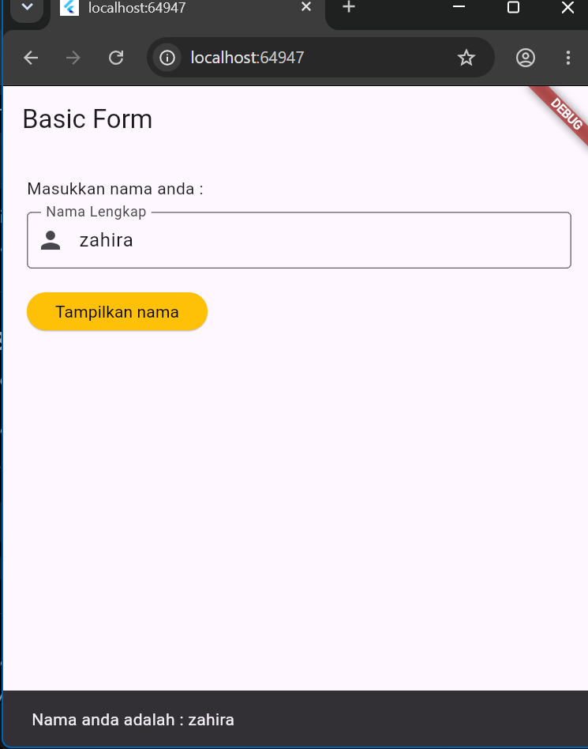
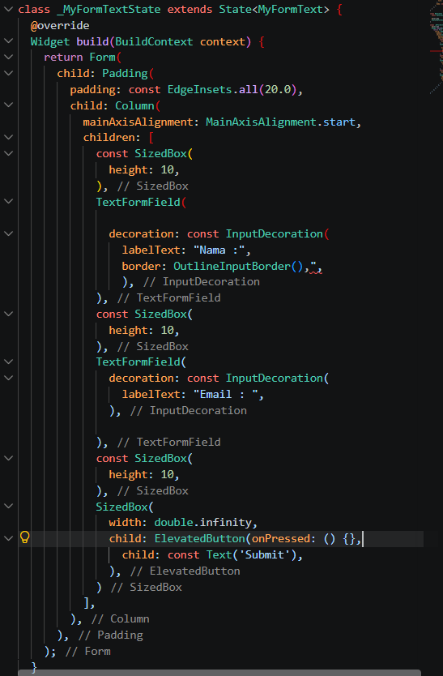
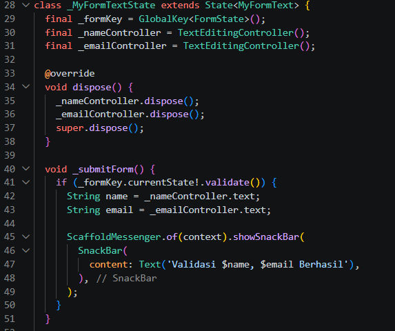
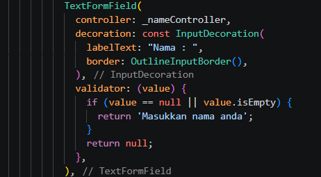
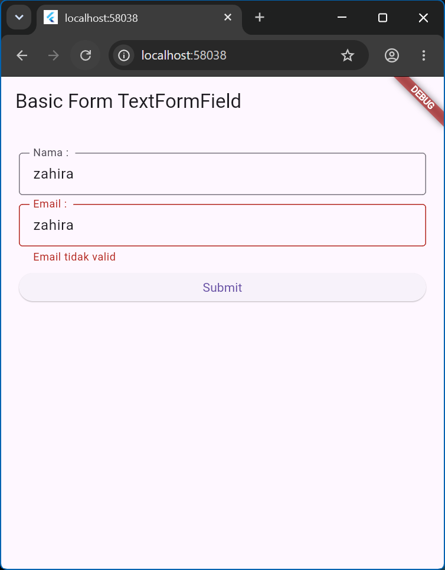
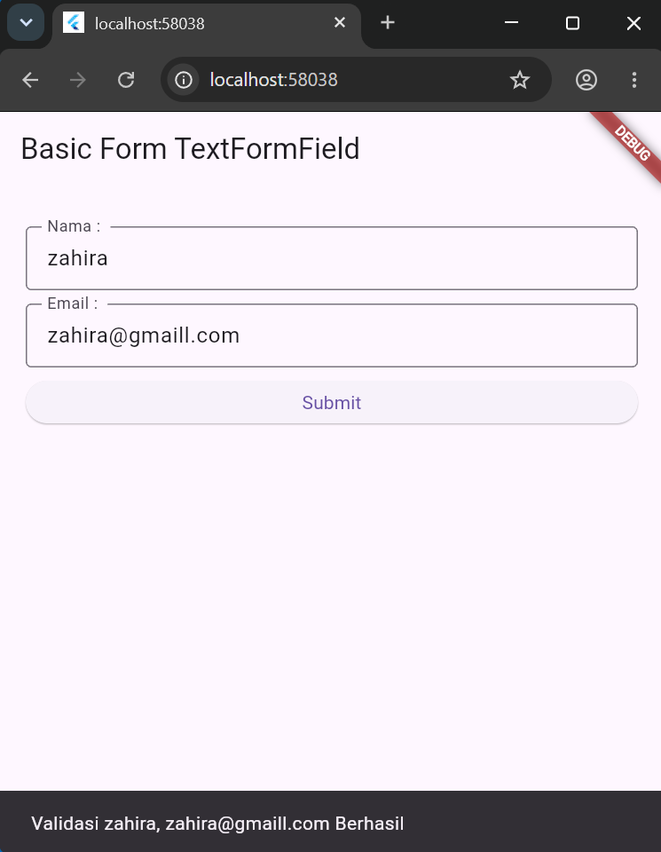
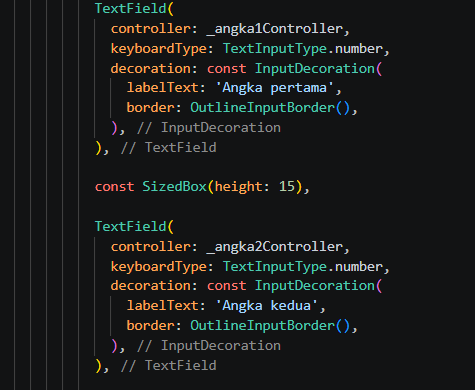
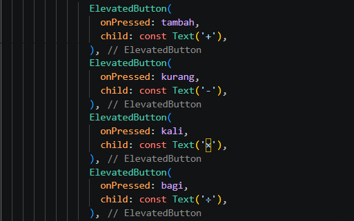
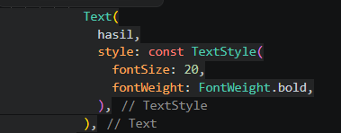

Laporan Praktikum 3
Input Widgets dan Basic Form
Pendahuluan
Praktikum ini membahas Input Widgets dan Basic Form pada Flutter. Praktikum dilakukan dengan membuat input menggunakan TextField dan TextFormField, kemudian mengelola input tersebut menggunakan controller, validasi form, dan tombol.
Tujuan Praktikum
- Membuat beberapa input widgets pada Flutter.
- Membuat dan mengontrol inputan dari user.
- Memahami penggunaan TextField dan TextFormField.
- Memahami penggunaan TextEditingController dan validasi form.
- Membuat aplikasi kalkulator sederhana menggunakan input dari user.
Alat dan Bahan
- Computer / laptop.
- Flutter development environment.
- Visual Studio Code.
- Flutter SDK.
- Emulator atau perangkat untuk menjalankan aplikasi.
Langkah-Langkah Praktikum
Langkah pertama adalah membuat file Dart baru bernama form-textfield.dart di dalam folder lib. File tersebut digunakan untuk membuat basic form menggunakan widget TextField dan ElevatedButton.
Tampilan awal terdiri dari teks petunjuk, satu TextField untuk memasukkan nama, dan satu ElevatedButton.

Pada class _MyFormState ditambahkan TextEditingController. Controller digunakan untuk mengambil nilai yang dimasukkan oleh user pada TextField. Method dispose() digunakan untuk membersihkan controller setelah widget selesai digunakan.

TextField diberikan controller, keyboardType, dan onChanged. Controller digunakan untuk mengelola input, keyboardType menentukan jenis input, sedangkan onChanged digunakan untuk membaca perubahan ketika user mengetik.

Pada ElevatedButton ditambahkan event onPressed untuk mengambil teks dari controller. Nilai tersebut kemudian ditampilkan menggunakan SnackBar ketika tombol ditekan.

Selanjutnya dibuat file form-textformfield.dart di dalam folder lib. Form terdiri dari dua TextFormField untuk nama dan email serta sebuah ElevatedButton untuk melakukan submit.

Pada class _MyFormTextState dibuat GlobalKey<FormState>, controller untuk nama, dan controller untuk email. GlobalKey digunakan untuk mengakses FormState sehingga validasi dapat dijalankan menggunakan method validate().

TextFormField nama diberikan validator untuk memastikan input tidak kosong. TextFormField email juga divalidasi agar tidak kosong dan harus mengandung karakter @.

Method _submitForm() dipanggil melalui onPressed pada ElevatedButton. Apabila seluruh validasi berhasil, nama dan email yang telah dimasukkan akan ditampilkan melalui SnackBar.

validasi email jika tidak mengandung karakter @

validasi email jika mengandung karakter @

Latihan / Tugas Kelas A
Membuat aplikasi kalkulator yang dapat menjalankan operasi kabataku,.
Untuk latihan dibuat file baru bernama kalkulator.dart di dalam folder lib. Lalu buat dua Inputan
Aplikasi menggunakan dua widget TextField untuk menerima angka pertama dan angka kedua. Masing-masing input menggunakan TextEditingController agar nilai dapat diambil saat tombol operasi ditekan.

Digunakan empat ElevatedButton untuk menjalankan operasi tambah (+), kurang (-), kali (×), dan bagi (÷).

Setelah tombol operasi ditekan, nilai dari kedua input dihitung sesuai operasi yang dipilih. Hasil perhitungan kemudian ditampilkan menggunakan widget Text.

Aplikasi kalkulator dapat menerima dua angka dan menjalankan keempat operasi kabataku. Pada operasi pembagian, program juga menangani kondisi ketika angka kedua bernilai nol agar tidak terjadi pembagian dengan nol.

Kesimpulan
Praktikum ini memberikan pemahaman mengenai penggunaan TextField dan TextFormField untuk menerima input dari user pada Flutter. Selain itu, dipelajari penggunaan TextEditingController, GlobalKey, validasi form, dan ElevatedButton untuk mengelola input. Pada latihan Kelas A, konsep tersebut diterapkan dalam pembuatan kalkulator sederhana yang dapat melakukan operasi tambah, kurang, kali, dan bagi.
Repository GitHub
Source code Praktikum dapat dilihat melalui repository berikut.
Lihat Repository GitHub